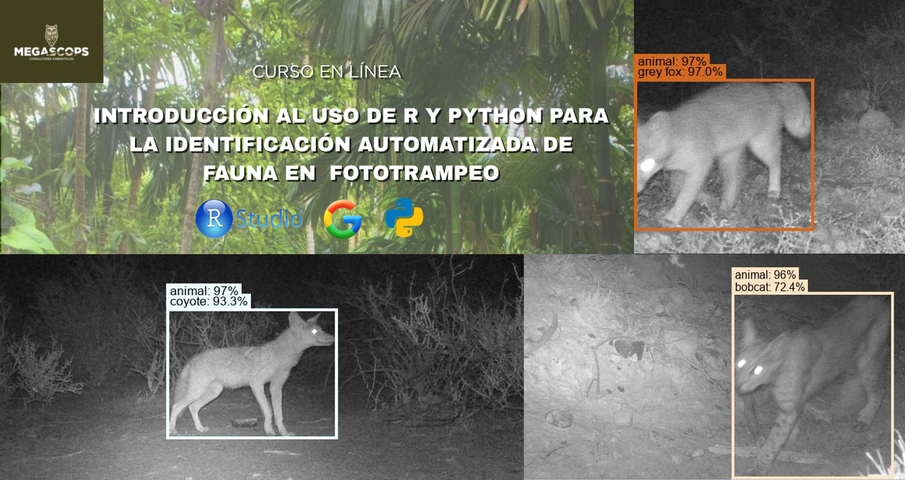
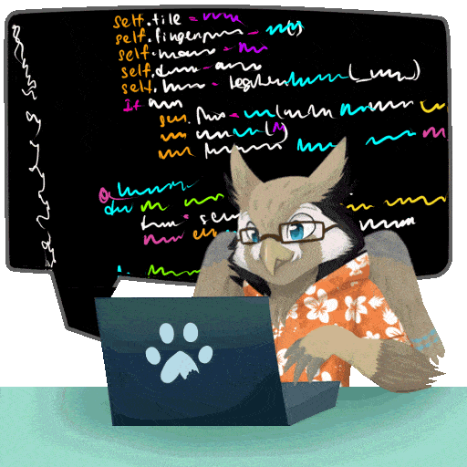
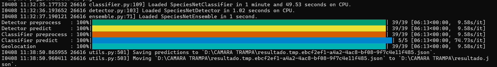

Manual del participante | Curso online: Intro al uso de R y Python para fototrampeo 🤖🐆

Introducción
¡Bienvenid@s! 🦉
Nos da mucho gusto dar inicio al curso introductorio al uso de R y Python para la detección automatizada de fauna en fototrampeo 🤓
Este es el manual del participante, donde podrás consultar cada uno de los pasos que realizaremos y el contenido de manera general, así como todos los códigos y resultados que obtendremos a lo largo del flujo de trabajo.
El objetivo de este manual es que sea interactivo, claro y sea una guía útil para que puedas replicar los códigos con facilidad.
Estamos seguros de que esta guía te ayudará a disfrutar de este proceso sin que programar sea un dolor de cabeza, cuando puede ser muy divertido. Permitirá potencializar tu desarrollo profesional y muy importante, permitirte cumplir con cualquier objetivo que tengas relacionado con la gestión ambiental, monitoreo y/o conservación de la biodiversidad.

Instalación de R y RStudio 🧑🏻💻
Primero, es importante tener instalado R que es el lenguaje de programación y RStudio que es la interfaz de edición del código, para esto, puedes consultar este video de Youtube
Instalación de Positron 🤖
Una amplia recomendación que haremos es adelantarse a instalar Positron, el cual es un editor de código creado por Posit (la empresa anteriormente conocida como RStudio). Está diseñado para flujos de trabajo de ciencia de datos, análisis y estadística, ofreciendo la ejecución simultanea de código en R y Python. Para esto, puedes consultar este video de Youtube
Instalación de Python 🐍
La instalación de Python la estaremos realizando a partir de Miniforge, el cual es un entorno para instalar y ejecutar código Python. Para instalarlo en Windows simplemente descarga y ejecuta este enlace de instalación en Windows. Si te aparece un mensaje de seguridad, da clic en “Descargar de todos modos”.
Para confirmar que estás en la consola de Miniforge verás un nombre de entorno entre paréntesis antes de tu directorio actual, como este: (base) c:\>
Crear un entorno virtual de Python
Un entorno virtual es un espacio de trabajo independiente y aislado en tu computadora el cual contendrá su propia instalación de Python y sus librerías. Permite la reproducibilidad, evita el conflicto de versiones, facilita la portabilidad y permite no tener instaladas tantas librerías y archivos en tu computadora.
En MiniForge copia y pega los siguientes códigos, primero la línea de creación del entorno y luego la línea de activación. Una vez creado el entorno ya no es necesario volverlo a crear, cuando abras de nuevo MiniForge para un nuevo análisis, sólo ejecuta la segunda línea:
conda create -n speciesnet python=3.11 pip -y # crear el entorno (una vez)
conda activate speciesnet #activar el entorno Una vez que se haya ejecutado adecuadamente y activado el entorno virtual, debes ver un comando como este: (speciesnet) c:\> también puede aparecer como: (speciesnet) c:\>Users\Tu_usuario
Ahora sí, estamos listos para ejecutar el modelo de speciesnet 😉😎
Instalación del paquete SpeciesNet 🐆
Para la instalación del paquete de SpeciesNet usaremos el siguiente código:
pip install speciesnet #instalar paquete
pip install speciesnet --use-pep517 # para Mac si es que aparece errorPara confirmar que el paquete se ha instalado, ejecutamos la siguiente línea de código la cual nos está diciendo que nos comparta información de ayuda sobre el paquete y deberás observar un texto de ayuda sobre el scrip principal para SpeciesNet.
python -m speciesnet.scripts.run_model --helpEjecución de SpeciesNet
La ejecución del modelo lo haremos mediante el script “run_model” usando el siguiente comando:
python -m speciesnet.scripts.run_model --folders "c:\tu\carpeta\imagenes" --predictions_json "c:\carpeta\salida\nombre_archivo.json" --country MEXAhora, aquí es muy importante entender los componentes del código donde se definirán las rutas a las carpetas donde se encuentran las fotografías a analizar y la carpeta donde se guardarán los resultados. Al ejecutar el modelo, obtendrás un archivo en formato .json
Por lo tanto, en la primer ruta, va la dirección a tus fotografías y en la segunda ruta, la carpeta donde se exportarán tus resultados en formato .json. Es muy importante que al finalizar la ruta, escribas el nombre del archivo y la extensión. P.ej. "c:\analisis\resultado\resul_trampa_01.json"
Delimitar la región geográfica 🌎
Una observación muy importante es asignar el país al cual se va a delimitar la identificación, de lo contrario, puede indentificar a un coyote como un lobo o especies que no pertenecen al país. Para definir el país se usa el código de tres letras ISO 3166-1 alfa-3 en el caso de México es: --country MEX
Es importante recordar que este proceso se ejecuta en conjunto el clasificador general Megadetector el cual se encarga de clasificar por vehículos, personas o animales (incluyendo animales domécticos) y el clasificador específico (las especies) por SpeciesNet el cual se encarga de asignar la especie con base en la delimitación geográfica y con sus respectivos porcentajes de precisión.
Visualización de la salida de SpeciesNet 🎞️
Como vimos anteriormente, el formato de salida al ejecutar el modelo SpeciesNet es un archivo .json. Para poder hacer la visualización de las imágenes con sus respectivos cuadros delimitadores es necesario instalar la herramienta de visualización de Megadetector:
pip install megadetector-utils #instalar la herramienta de visualización
python -m megadetector.visualization.visualize_detector_output "c:\archivo\resultado\nombre_archivo.json" "c:\carpeta\donde\quieres\visualizar\resultados" --html_output_file "carpeta\para\exportar\html\resumen.html"La primera línea de código instala la herramienta de visualización. La segunda línea asigna las carpetas donde:
- La ruta donde se encuentra tu archivo .json como resultado de ejecutar SpeciesNet
- La ruta donde se encuentra la carpeta donde quieres que se guarden las imágenes
- La ruta donde se encuentra la carpeta donde quieres que se guarde el reporte en .html
Así es como se ve cuando el modelo ha corrido adecuadamente:

Organización de resultados en carpetas 📁
Una vez que hemos obtenido nuestro .html con el resumen de nuestro análisis, podemos ejecutar una función adicional para que las fotografías se organicen de acuerdo con la clasificación asignada. Para esto, ejecutaremos el siguiente código:
python -m megadetector.postprocessing.postprocess_batch_results "D:\ruta\ archivo \resultado.json" "D:\ruta_carpeta_seleccionada\post-procesamiento" --image_base_dir "D:\ruta_carpeta_fotos_originales\imputs"Una vez generado esto, podremos visualizar los .html por cada grupo clasificado y usar el index.html como un “menú” con la información de todas nuestras identificaciones. Este es un ejemplo de lo que podríamos generar y mostrar para un reporte: Resumen de análisis fototrampa
¡EXCELENTE! Hemos logrado automatizar la identificación de especies 🐆
Ahora que hemos logrado ejecutar los modelos de inteligencia artificial para realizar la automatización de la identificación de fauna en nuestras imágenes de fototrampeo, nos queda un paso más, el aprovechar nuestros resultados en formato .json en R y RStudio para crear nuestra base de datos y realizar análisis ecológicos más complejos.
Para esto, ahora usaremos lenguaje R y ya sea que usemos nuestra IDE RStudio o Positron.
Leyendo reportes .json en R y RStudio o Positron
El siguiente script, te permitirá:
- Leer el formato .json
- Separar las columnas delimitadas por comas
- Estructurar la base de datos
- Filtrar los intervalos de confianza
- Descartar vehículos, personas o fauna que no sea de nuestro interés
- Generar un gráfico de frecuencias
Instalación de librerías
Primero, activamos las librerías a utilizar, si no las tienes instaladas, recuerda que se instalan con: install.packages("Nombre de la librería) posteriormente las activamos con library
# Activación de librerías
library(tidyverse) # manejo de bases de datos
library(jsonlite) # lectura y aplanamiento de archivos .jsonLectura de archivo .json
Ahora, asignaremos a un objeto, la ruta donde se encuentra nuestro reporte en formato .json
ruta_absoluta <- "resul_JSON/ejercicio_3_chle.json" Y, leeremos el archivo con la librería jsonlite y extraeremos la información de nuestro interés para la base de datos:
# 1. Cargar el archivo
rawdata_2 <- jsonlite::read_json(ruta_absoluta, simplifyVector = T) #lectira del archivo
anotaciones <- rawdata_2$predictions |>
dplyr::select(filepath, prediction, prediction_score, prediction_source) # objeto anotaciones que selecciona columnas de interés
View(anotaciones) #observar BDDEstructura de la base de datos y carpintería
Como nuestras columnas vienen separadas por comas, vamos a separar la taxonomía donde cada nivel de clasificación sea una columna, también limpiaremos los nombres de los archivos para tener únicamente el nombre de la foto. Además, filtraremos el intervalo de precisión (score) que sea superior al 30 % para tener datos confiables y no falsos positivos.
# 2. Limpiar y separar la taxonomía
# SpeciesNet usa: ID;clase;orden;familia;genero;especie;nombre_comun
df_ecology <- anotaciones |> #recuerda que usamos objeto "anotaciones"
tidyr::separate(prediction,
into = c("id_taxa", "clase", "orden", "familia", "genero", "especie", "nombre_comun"),
sep = ";",
fill = "right") |>
# Limpiar nombres de archivos para tener solo el nombre de la foto
dplyr::mutate(filename = basename(filepath)) |>
# Opcional: Filtrar predicciones de baja confianza (ej. < 30%)
dplyr::filter(prediction_score >= 0.30)El siguiente paso, será quedarnos únicamente con los datos de fauna o los de nuestro interés particular, realizando carpintería sencilla de bases de datos:
#3. Filtrar solamente los datos de fauna
df_animales <- df_ecology |>
dplyr::filter_out(nombre_comun %in% c("human","vehicle","blank", "no cv result", "domestic cattle")) |>
dplyr::count(nombre_comun, familia) |>
dplyr::rename(abundancia=n)Graficación de resultados
Finalmente, crearemos un grafico sencillo para conocer cuales son los grupos más frecuentes en nuestro monitoreo:
#4. Graficar
grafica_fauna <- ggplot(df_animales, aes(x = reorder(nombre_comun, abundancia),
y = abundancia,
fill = familia)) +
geom_bar(stat = "identity") +
coord_flip() + # Volteamos la gráfica para que los nombres se lean bien
scale_fill_viridis_d(option = "mako") + # Colores profesionales y legibles
labs(
title = "Frecuencia de Detecciones por Especie",
subtitle = "Monitoreo de Fauna",
x = "Especie (Nombre común)",
y = "Número de detecciones",
fill = "Familia"
) +
theme_minimal() +
theme(
legend.position = "bottom",
title = element_text(face = "bold")
)
print(grafica_fauna) #ver gráficoGuardar nuestros resultados
Si queremos guardar nuestro gráfico y nuestra base de datos, usamos el siguiente código:
# Guardar gráfico
ggsave(plot=grafica_fauna, #objeto que contiene el gráfico
filename = "grafs/graf_fauna.png", #ruta de guardado y nombre del archivo
width = 12, #medidas deseadas
height = 7,
dpi = 600, #esolución
bg="white") #fondo blanco
# Guardar base de datos
library(rio) #usamos la librería rio para exportar fácilmente
rio::export(df_ecology, "base_fauna_JSON.xlsx")¡FELICIDADES! Has concluido el flujo de trabajo 🦾🤖🐆🦉🐍🧑🏻💻☑️
Nos da mucho gusto que nos hayas acompañado en este proceso, tus datos están listos para continuar con análisis ecológicos más complejos y poder compartir resultados preliminares con tus colegas, empresa o academia. Confiamos en que nuestro flujo de trabajo te ayudará a marcar una diferencia en tu desarrollo profesional y contribuirá a tomar decisiones adecuadas para la conservación de la biodiversidad 🤓
APÓYANOS 🙏🏻
Si te gustó este curso, por favor sígenos en nuestras redes sociales y déjanos un comentario o retroalimentación para mejorar nuestros cursos y hacer que cada vez más personas se interesen en estas herramientas para implementarlas en sus proyectos. Nuestra misión es clara, apoyar a cualquier persona u organización a conservar la biodiversidad desde un enfoque científico y técnico aprovechando las más actuales tecnologías 🌎🌱🦉🤖